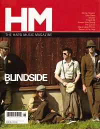

Blindside
 |
| November 2002 HM |
 |
| March 2004 HM |
 |
| September 2005 HM |
Media coverage:
- Fall 1996 in Garlic Press "Interview: Blindside"
- Jan 1998 in HM "Blindside", by J. Edward Keyes
- Sep 1998 in 7ball "Blinda Giden", by Derek Walker
- Win 1999 in FUEL "Northern Lights", by Roy Culver
- Sep 1999 in HM "Concert Review: P.O.D., Blindside, Project 86", by Gordon (a girl called)
- Nov 1999 in HM "Blindside Crushes 'Em", by Val Sutton
- May 2001 in Campus Life "Crank It Up!", by Chris Lutes
- Jan 2002 in HM "Concert Review: Youth of the Nation", by Andrew Hazen
- Nov 2002 in HM "Silence", by Jamie Lee Rake
- May 2003 in HM "Live Report: La Zona Rosa, Austin, TX", by Kern County Kid
- Mar 2004 in HM "Finally, A Band For All of Us", by Adam Robinson
- Mar 2004 in Relevant "Blindside Is Burning", by Chad Bonham
- Jul 2004 in HM "Live Report: P.O.D., Blindside, Lacuna Coil & Hazen Street"
- Aug 2004 in CCM "Standing Room Only: Vic Theatre, Chicago, IL", by Andy Argyrakis
- Sep 2005 in HM "What Doesn't Kill You...", by David Huff
- Nov 2005 in Relevant "Finding The Forgotten", by Aaron Brummett
- Apr 2011 in HM "Blindside", by Corey Erb
- Jul 2011 in Group "Ideas: Ministry and Media: Blindside", by Scott Firestone IV
- Jul 2011 in CCM Digital "What's New: Blindside", by Andy Argyrakis
Albums & reviews:
1996: Blindside demo
- Fall 1996 in Garlic Press
- Win 1997 in Garlic Press
- Mar 1998 in 7ball, by Brad Caviness
- Mar 1998 in HM, by Doug Van Pelt
- 1998 in Cornerstone, by Don Hill
- May 1998 in YouthWorker, by Scott Will
- Jan 2000 in HM, by David M Pogge
- May 2000 in 7ball, by Melody Alexander
- May 2000 in YouthWorker, by Dave Urbanski
- Sep 2002 in HM, by Jeffrey Ellinger
- Mar 2004 in 7ball, by Andree Farias
- May 2004 in HM
- Sep 2004 in YouthWorker, by Dave Urbanski
- Sep 2005 in HM, by Tim Hallila
- Sep 2007 in HM, by Tim Hallila
- Apr 2011 in HM, by Charlie Steffens
- Jun 2011 in CCM Digital, by Andy Argyrakis
- Sep 2011 in Living With Teenagers, by Randy Williams
Award Summary (Nominations / Wins)
Dove Awards- 2012 Dove Awards
- Rock Album: With Shivering Hearts We Wait
Books about Blindside
- "Blindside" in The Encyclopedia of Contemporary Christian Music (Mark Allan Powell, 2002)

© 2011 CMnexus. Last updated September 2019. Contact: editor -AT- cmnexus -DØT- org About